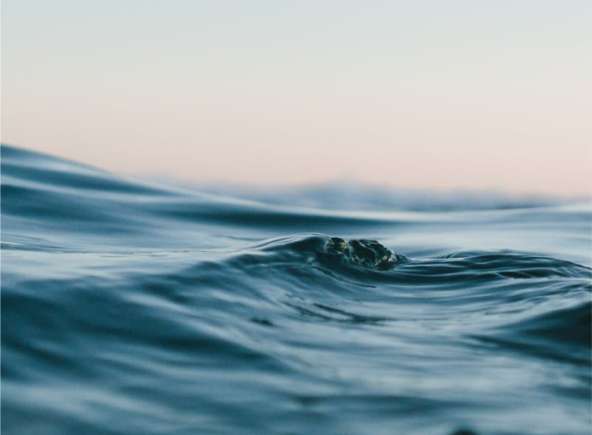
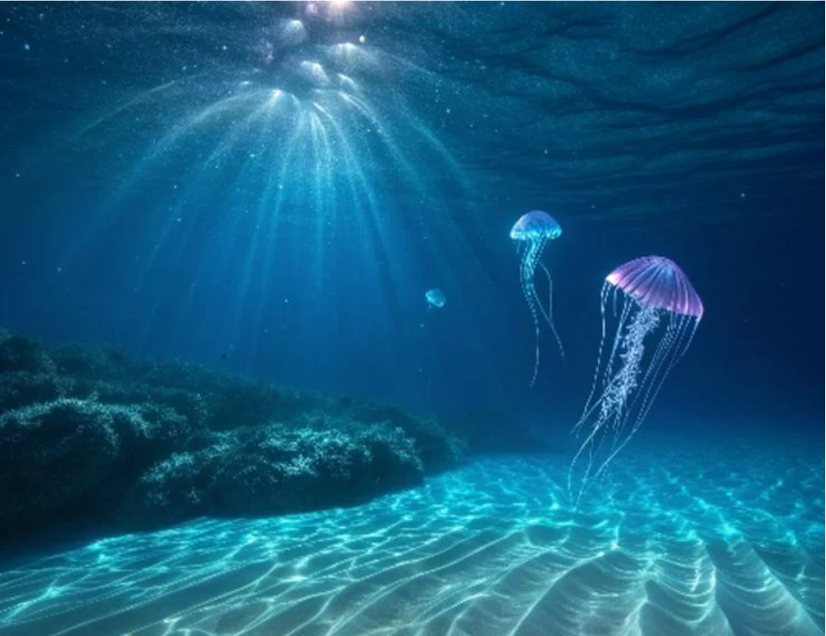

Why you should save water?
Saving water in personal use is important due to water scarcity. Conserving water for drinking, washing, and cleaning helps protect resources for future generations.

Saving water in personal use is important due to water scarcity. Conserving water for drinking, washing, and cleaning helps protect resources for future generations.
Water conservation in agriculture is essential because most freshwater is used for farming. Knowing each crop's water needs helps reduce waste and protect crops.

Saving water is vital for society. It provides clean water, reduces conflicts over resources, and improves health and living conditions.
